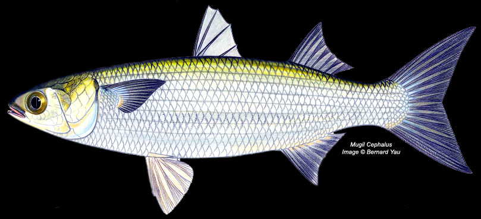

Les anciens œufs séchés de mulet gris capturés dans la nature. Deux ingrédients – des œufs de poisson et du sel – et près de trois millénaires d’artisanat. C’est ce dont rêvent les papilles.
La poutargue est fabriquée à partir d'œufs ou d'œufs de mulet gris capturés dans la nature (Mugil Céphale). Chaque poisson contient deux lobes d'œufs, chacun bercé dans son propre sac naturel.
Les sacs sont soigneusement retirés entiers, soigneusement nettoyés, puis enrobés de gros sel. Ils sont ensuite séchés ou déshydratés naturellement jusqu'à ce qu'ils atteignent un état ferme et affiné, quelque part entre la texture d'une saucisse dure et celle d'un fromage vieilli.
Une fois durcis, ils sont immédiatement conservés, soit dans un film rétractable, soit trempés plusieurs fois dans de la cire de paraffine fondue et chaude, une méthode à l'ancienne qui a été utilisée pendant des siècles avant l'existence de la conservation moderne.
Plus la cure est longue, plus la saveur est prononcée et plus la couleur est foncée. Certains l’aiment doux ; certains l'aiment pointu. Nous portons les deux.

Mugil Céphale
C'est ça.
Aucun additif. Pas de conservateurs. Aucun raccourci. La même recette depuis 3 000 ans.
La poutargue remonte à près de 3 000 ans, aux Phéniciens, dont la culture commerciale maritime entreprenante s'est répandue à travers la Méditerranée de 1550 à 300 avant JC. On pense qu’ils sont la première culture à saler et sécher les œufs de mulet gris.
Des dessins de pêcheurs préparant des œufs de mulet ont été découverts le long des rives du Nil sur des peintures murales égyptiennes antiques. Les peuples méditerranéens restent aujourd’hui les plus grands connaisseurs et consommateurs de poutargue.
Les œufs de mulet séchés ont été écrits pour la première fois dans la littérature par Bartolomeo Sacchi (Platina), un écrivain et gastronome italien qui a écrit le tout premier livre de cuisine imprimé "De Honesta Voluptate et Valetudine" ("Sur le plaisir honorable et la santé"), ca. 1465.
Ce sont les Italiens qui ont le mieux popularisé le terme « poutargue » – abréviation de Poutargue de Muggine (œufs de mulet) — le terme le plus universel pour désigner les œufs de mulet salés aujourd'hui.
Aujourd'hui, la poutargue est largement appréciée dans toute l'Europe, notamment en Italie, en France, en Espagne, en Grèce et en Égypte. Le Japon, Taiwan, le Portugal, la Croatie, l'Afrique du Nord, le Liban et la Turquie ont chacun leur propre nom et leurs propres méthodes de préparation pour pratiquement le même mets ancien.
Utilisé par les chefs dont Martha Stewart, Frankie Celenza, et Jamie Oliver, et présenté sur CNN Anthony Bourdain : Parties inconnues (Marseille et Charleston, 2015).
La poutargue se déguste de préférence à température ambiante, comme un fromage fin. Voici tout ce que vous devez savoir.
Amenez toujours la poutargue à température ambiante avant de servir. La poutargue froide atténue la saveur. Laissez reposer 15 à 20 minutes hors du réfrigérateur.
Un couteau super tranchant et non dentelé vous offre une coupe nette sans déchiqueter les œufs. Pour les variétés cirées, laissez-les d’abord atteindre la température ambiante – la cire se décolle facilement.
Pour la Boutargue Classique et autres lobes cirés, décollez soigneusement la cire de paraffine une fois à température ambiante. La cire est uniquement destinée à la conservation – les œufs à l’intérieur sont ce que vous recherchez.
Conservez toujours la poutargue au réfrigérateur. Pour de meilleurs résultats, enveloppez hermétiquement toute pièce ouverte dans un film plastique, en éliminant toutes les poches d'air. Filmez sous film rétractable si possible.
Râpez la poutargue sur les pâtes, le riz, les œufs ou les toasts à l'aide d'une râpe fine ou d'un microplan. Il transforme un plat ordinaire en quelque chose d'extraordinaire.
Coupez-le en fines tranches et servez-le à l'apéritif — avec de l'Arak, un blanc sec ou du prosecco. C'est ainsi qu'on le déguste depuis des siècles à travers la Méditerranée.
Chaque culture qui a touché la Méditerranée a développé son propre nom et sa propre préparation au même trésor ancien.
La poutargue est aussi nutritive que délicieuse. Juste deux ingrédients, remplis de bienfaits naturels.
Du doux et sucré au piquant et complexe, nous avons une poutargue pour chaque palais. Livraison USPS gratuite sur toutes les commandes aux États-Unis.